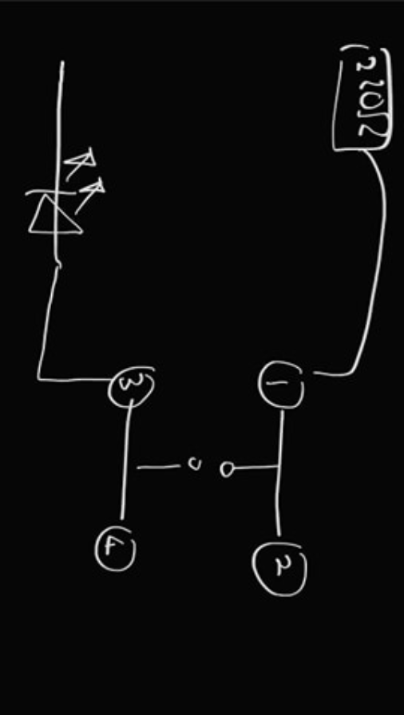
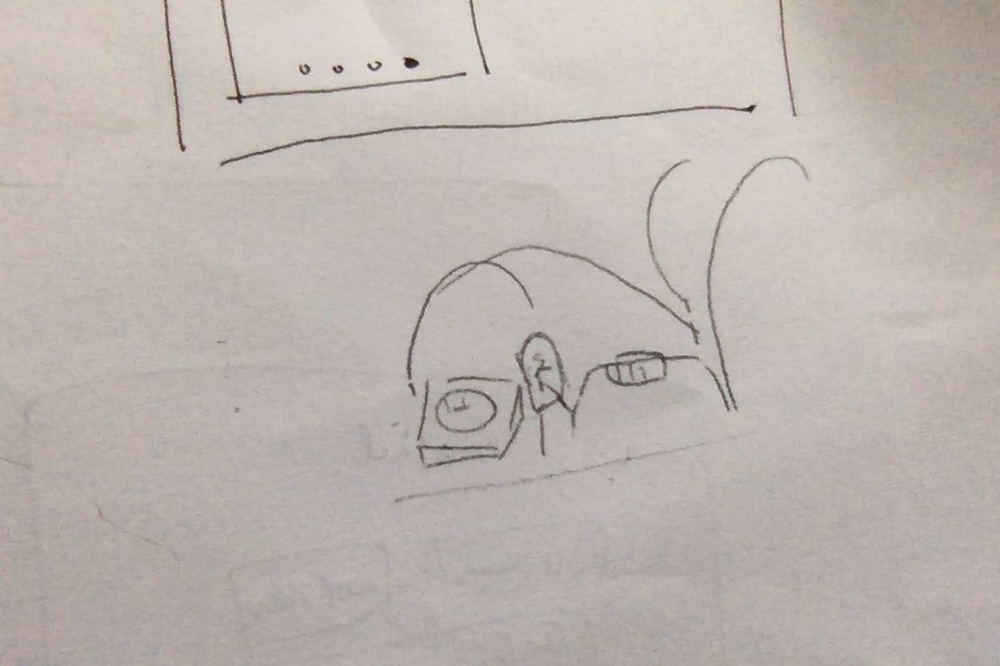
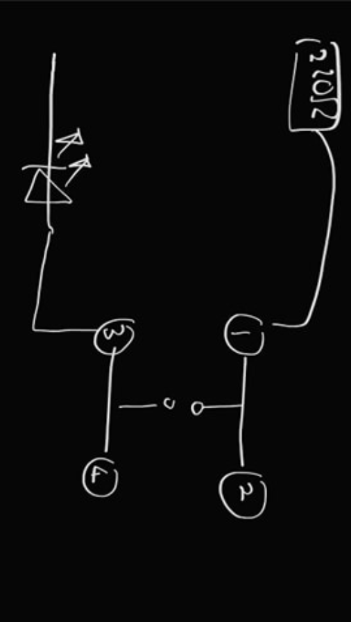
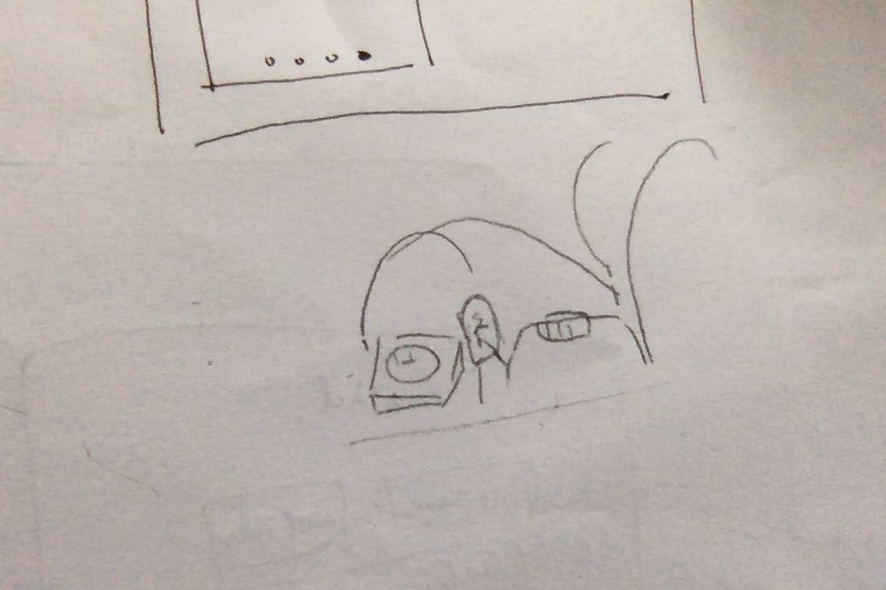
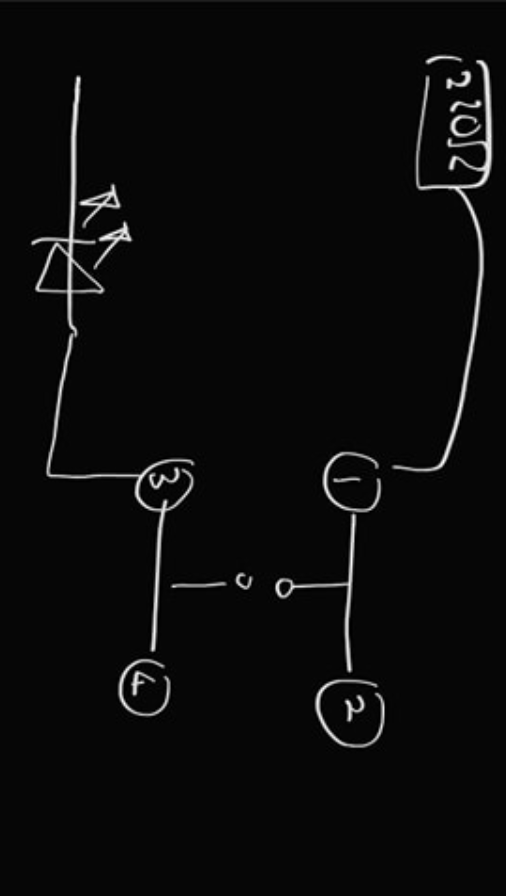
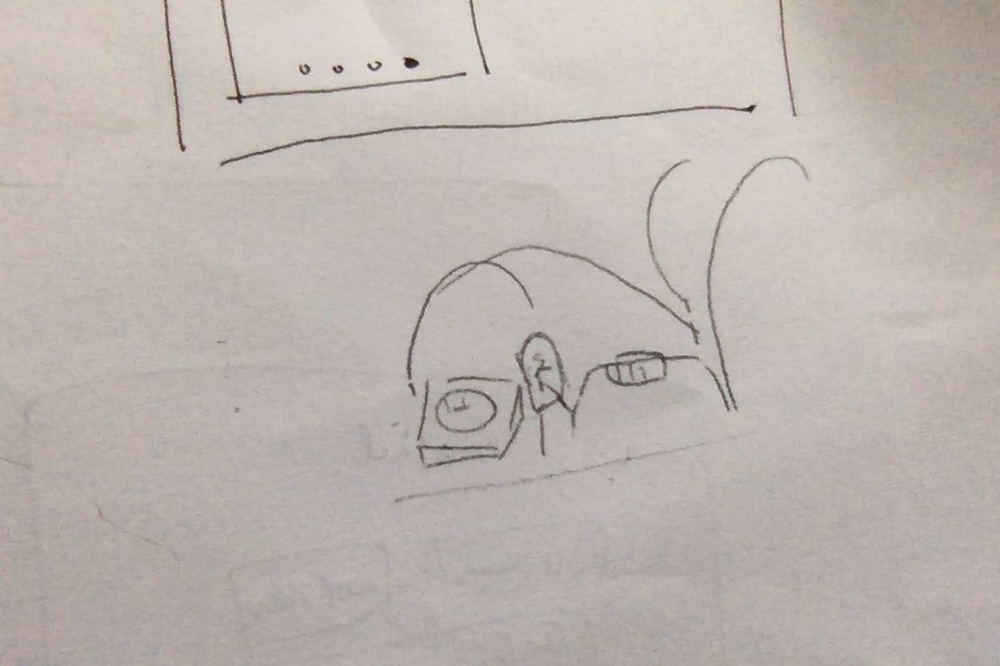

1. Build up fundamental electrical engineering principles.
2. Understand various electrical components and how they are used in conjunction with code.
3. Scaffold problem solving for Arduino challenges.
These are a series of challenges that I set up for students to complete. They begin with turning on a LED light bulb, and from there, each challenge builds upon knowledge to eventually lead students up to programming microcontroller circuit boards with various components. The challenges are designed to be "bite sized" pieces so that students can work on them in smaller chunks before tackling more complex projects, which occur later in the course. After completing each challenge, students record videos and or take photos of the completed and working project and fill out a reflection for each challenge describing their learning, challenges, and discoveries.
The project has been very successful and the students really enjoy them. Parents have also let me know how their child wishes to persue eletrical engineering jobs after getting involved with our class projects.

